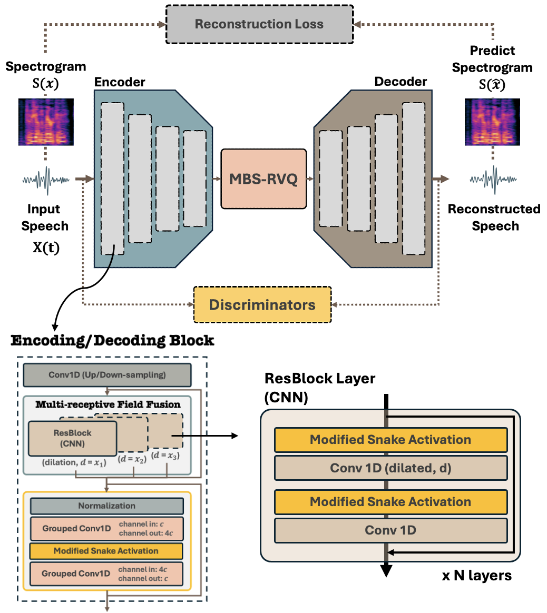
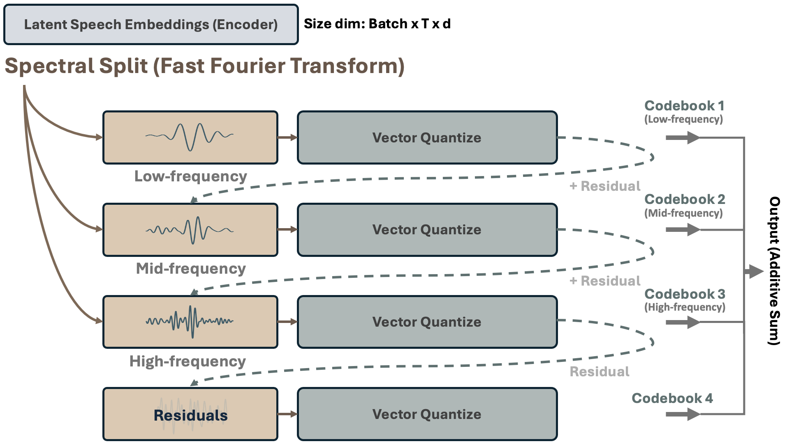

Achieving high-fidelity audio compression while preserving perceptual quality across diverse audio types remains a significant challenge in Neural Audio Coding (NAC). This paper introduces MUFFIN, a fully convolutional NAC framework that leverages psychoacoustically guided multi-band frequency reconstruction. Central to MUFFIN is the Multi-Band Spectral Residual Vector Quantization (MBS-RVQ) mechanism, which quantizes latent speech across different frequency bands. This approach optimizes bitrate allocation and enhances fidelity based on psychoacoustic studies, achieving efficient compression with unique perceptual features that separate content from speaker attributes through distinct codebooks. MUFFIN integrates a transformer-inspired convolutional architecture with proposed modified snake activation functions to capture fine frequency details with greater precision. Extensive evaluations on diverse datasets (LibriTTS, IEMOCAP, GTZAN, BBC) demonstrate MUFFIN’s ability to consistently surpass existing performance in audio reconstruction across various domains. Notably, a high-compression variant achieves an impressive SOTA 12.5 kHz rate while preserving reconstruction quality. Furthermore, MUFFIN excels in downstream generative tasks, demonstrating its potential as a robust token representation for integration with large language models. These results establish MUFFIN as a groundbreaking advancement in NAC and as the first neural psychoacoustic coding system.
Fig. 1 Architecture of MUFFIN incorporating a fully convolutional structure. The autoencoder blocks implement transformer-like operations through a (1) multi-receptive field communication layer for spatial dependency modeling, and (2) an inverted bottleneck layer for increased neural complexity.
Note: Our MUFFIN neural psychoacoustic coding introduces a novel method that naturally disentangles speech attributes, driven by label-free psychoacoustic studies. This positions our approach as an innovative and simpler alternative to FACodec, achieving similar factorization goals with a more straightforward optimization process. This could significantly advance the study of low-resource factorized speech representation learning.
System Overview

Speech Samples
(A) Audio Reconstruction |
||||||
|---|---|---|---|---|---|---|
| DAC | Encodec | Hificodec | Muffin (75 Hz) | Muffin (25 Hz) | Muffin (12.5 Hz) | Target |
(B) Music Reconstruction |
||||||
|---|---|---|---|---|---|---|
| DAC | Encodec | Hificodec | Muffin (75 Hz) | Muffin (25 Hz) | Muffin (12.5 Hz) | Target |
(C) Emotional Speech Reconstruction |
|||||||
|---|---|---|---|---|---|---|---|
| DAC | Encodec | Hificodec | Muffin (75 Hz) | Muffin (25 Hz) | Muffin (12.5 Hz) | Mimi | Target |
(D) LibriTTS Test-Clean Reconstruction |
|||||||
|---|---|---|---|---|---|---|---|
| DAC | Encodec | Hificodec | Muffin (75 Hz) | Muffin (25 Hz) | Muffin (12.5 Hz) | Mimi | Target |
(E) LibriTTS Test-Other Reconstruction |
|||||||
|---|---|---|---|---|---|---|---|
| DAC | Encodec | Hificodec | Muffin (75 Hz) | Muffin (25 Hz) | Muffin (12.5 Hz) | Mimi | Target |
(F) Psychoacoustic Codebook Auditory Analysis |
|||||
|---|---|---|---|---|---|
|

| |||||
| Remark: | |||||
We discover that through MBS-RVQ, MUFFIN learns to quantize latent speech features,
where segment speech attributes across distinct frequency bands achieving weak disentanglement without labels (no supervision required). Specifically, we identify the following roles of the learned codebooks:
| |||||
| Target | Codebook 1 | Codebook 2 | Codebook 2 + Codebook 1 | Codebook 3 | Codebook 3 + Codebook 1 |
| Speech (MUFFIN with MBS-RVQ) | |||||
| Non-stationary or transient sound: Music (MUFFIN with MBS-RVQ) | |||||
| Speech (MUFFIN with plain RVQ-Baseline) | |||||
| Non-stationary or transient sound: Music (MUFFIN with plain RVQ-Baseline) | |||||
(G) Zero-Shot Text-to-Speech Synthesis |
|||
|---|---|---|---|
| Prompt | VALL-E w/ Encodec | VALL-E w/ Hifi-codec | VALL-E w/ Muffin (75Hz) |
| Input Text: Then, turning to Jane, she asked, in a somewhat altered tone, "Has she been a good girl, Jane?" | |||
| Input Text: After early nightfall the yellow lamps would light up, here and there, the squalid quarter of the brothels. | |||
| Input Text: So choose for yourself to make a rush or tarry here. | |||
| Input Text: This I took for a sign that he had himself something to produce and that we should only have to wait . | |||
| Input Text: But it's not the first occurrence of its charming kind that I know to have involved a child. | |||